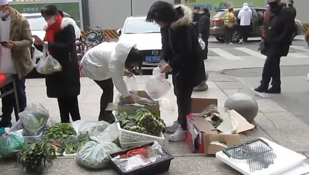
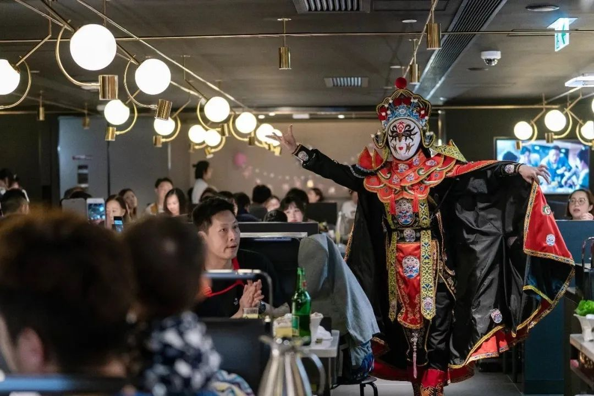
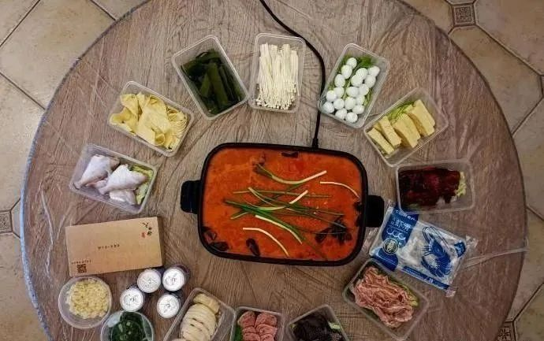

八合里海记牛肉火锅老板：月亏6000万，考虑卖房发工资
原文链接 备份链接 来源：八合里微博 记者 | 卢奕贝 编辑 |牙韩翔 “ 受到新型冠状病毒肺炎疫情的影响，通常需要排队2-3个小时的网红火锅店，如今也到了捉襟见肘的地步。 ” 1月25日，大年初一，汕头八合里海记牛肉火锅（下称“八合 …

在餐饮业遭受重创的相关新闻下，通常会有两种声音。一种鼓励店家们再坚持一会，另一种则忧心忡忡，「现在蔬果好贵，有的人在隔离期间还不开工资，出现报复性消费，又能持续多久呢？手上的钱都紧得很，我是不敢再大手大脚花钱了。」
文｜****史千蕙
编辑｜****萧祷
「惨了，每一头牛每天都要瘦的」
北漂女青年小琳始终记得她迄今为止最后一顿火锅。
那是1月16日，在当时，新冠肺炎还是一个遥远的名词，口罩尚未走俏，大街小巷的人们还可以光着嘴自由呼吸，北京市朝阳区的川渝火锅、老北京涮羊肉、潮汕牛肉口锅、椰子鸡火锅俯首皆是。
临近春节，小琳的那顿火锅是以素菜为主。在此后的整整一个月里，有好几个夜晚，她望着天花板，眼前一个场景在反复播放：九宫格里沸腾的红油，翻滚的毛肚，趁着刚煮熟的那一刻，裹着蘸料放入嘴中。镜头拉近，蘸料里的蒜泥清晰可见。镜头拉远，整个餐桌上还有黄喉、肉片、豆皮、土豆……
小琳不是唯一一个想吃火锅而不能的人。根据热门微博的统计，疫情结束后人们最想吃的东西分别是炸鸡、奶茶和火锅。前两者对着菜谱摸索，大致可以还原外面的口味，唯有火锅，操作上几乎没有难度，却最难复刻和朋友在火锅店涮肉的感觉。有的时候，聚在一起吃饭聊天，享受高水平服务、观看拉面表演，是与吃同样重要的事。
与火锅爱好者们的望眼欲穿相比，在餐饮业普遍受到重创的这个月，火锅店老板们的生意遭到了更大的打击。
李翔是重庆根据地连锁火锅店一家分店的店长。从腊月二十九停业放假到现在，他一直忧心忡忡。年三十的时候，他发现疫情越来越严重，街上无比冷清，只有超市和药店还坚持开着，「给我感觉比非典严重得多。」
与大多数餐饮机构一样，春节是李翔的火锅店全年客流量和营业额最高的时候。重庆人的家庭聚餐和朋友聚会，大多选在火锅店。往年春节，李翔的店面7天黄金周的销售额会在20万以上，是平常工作日的5倍。如果没有这次疫情，他预计今年春节的销售额会在40到50万。
1月30日，他和几个员工去了一趟店里处理食材。他们清点了库存的食物，每人分了一些，然后在店门口摆了个摊，以低于成本价的价格卖给了路人。李翔算了一下，这部分的亏损大概在2万元——如果不这么做，损失只会更多。

许多火锅店选择直接卖菜来减轻亏损图源视频截图
作为分店的店长，李翔需要操心的只是自己门店的盈亏。他不了解现金流的概念，也不担心整个火锅行业的走向。让他焦虑的是当下的情况，还有后续几个月的长尾效应。他的火锅店一共有40多张桌子，用餐高峰期时，客人们需要排一个小时的队。他想，除非等疫情彻底结束，否则聚餐都是危险的，不会有客人来。
但对于汕头八合里海记牛肉火锅的创始人林海平来说，问题要多得多。
林海平拥有132家连锁店面，他把面对疫情的措施分成了三个步骤，「安全」、「止损」和「增收」，武汉的四家分店还处于第一阶段。自暂停营业开始的一个多月内，八合里的上百家店铺一共亏损了6000万元。现金流大概够撑两个月，如果到第三个月情况依然没有改善，林海平准备出售自持物业。
在亏损的6000万里，有2/3是硬性的损失，比如门面租金、人工费用和宿舍成本。与门店配套的养殖场、屠宰场和中央厨房也跟着停业，又是一大笔钱。他还心疼他的牛——由于春节期间物流不通畅，八合里在年前运了很多未宰杀活牛到屠宰场。那些牛原本是越肥越好，油脂含量最高的胸口朥和五花趾是最受欢迎的两个部位。现在，牛在没有完全复工的屠宰场生活了一个来月，「惨了，每一头牛每天都要瘦的。」
更多的是看不见的流失。「一些还在努力中的店，因为这一次疫情，它就被over了。」意思是，一些分店的经营状况不上不下，本来想趁着春节的客流挽救一下，但是本来翻滚的火锅市场却遇上化不开的疫情寒冰，这些店全部亏损，「有一点鸡肋」。这些「鸡肋」店面成了第一批被止损的对象，它们不只是「暂停营业」，而是彻底的关停。

在八合里海记官方通知中，大一点的店面用到的词是「暂停营业」，部分店面用到的则是「结业」图源南方日报
出于自救的无奈之选
馋的时候，小琳想过自己在家打火锅。她算了一笔账：家里囤的食材如果用来涮火锅，一两顿就吃完了，如果做成炒菜，精打细算，可以撑一周。她也想过买自热火锅，但在一个近300人的美食交流群里发问后，每个买过自热火锅的人，都斩钉截铁告诉她「不好吃」。
自热火锅市场从2017年起爆发，三年间迅速扩张到近百亿级别。根据电商平台的数据统计，从2020年除夕夜到年初九，京东以自热火锅为代表的方便食品成交金额增长了3.5倍，苏宁的自热火锅品类销量同比增加了370.27%，小龙坎、自嗨锅和海底捞的天猫旗舰店数据显示，本月以来，仅麻辣牛肉口味的自热火锅单品的销量，就分别突破了1万、2.5万和3万。
李翔所在的火锅店，也曾在2018年左右推出过自热火锅，试图赶上潮流。研发成本和宣发费用加在一起，一共砸进去几百万。
然而，自热火锅市场和传统速食市场相近，消费者会本能信任速食企业相关品牌，或是全国布局的餐饮企业，如全国连锁的海底捞和小龙坎。李翔所在的火锅店是重庆本土品牌，尽管也在四川、山东、河南和贵州开有分店，却始终没有突破。
最终，仅仅过了半年，刚研发出来的自热火锅就停止生产了，刚运营起来的淘宝店也跟着关了。
在自热火锅的凑合和吃不到的堂食火锅之间，还存在第三种选项，火锅外卖。
疫情到来前，火锅外卖是一部分连锁火锅店额外营收的来源。根据美团点评在2019年推出的《中国餐饮报告》显示，火锅外卖市场的发展瞩目。主打一人食小火锅的呷哺呷哺曾在2018年的上半年大力推广外卖业务，外送业务收入同比提升了120%。常年需要排队的海底捞，推出了由独立部门运营、只做外送业务的门店。据海底捞的财报显示，从2017年到2019年，外卖业务的订单量和销售额分别增长了47.9%和40.9%。
不过，一些对于食材质量或是用餐场景有要求的老板，是不太乐意开通外送业务的。林海平是其中一个。潮汕牛肉火锅对于肉质的要求高，开到外地的大型连锁牛肉火锅店，不少都有自己的屠宰场、供应链和中央厨房，以保证客人吃到的牛肉是尽可能新鲜的。以八合里来举例，一头牛从被宰杀到吃，不会超过6小时。因此，尽管八合里早就开通了外送，也只配送炒粿条一类的主食。
市面上的火锅外卖主要分为两种，一种会将火锅食材烫熟，再配送给顾客，如呷哺呷哺和井格。另一种提供炉具锅具租赁和回收服务，配送生鲜和锅底，如海底捞。林海平此前没有关注过外卖市场，这段时间他研究了一下，发现有的外卖存在过度包装，也有的使用回收型的配套设施，如锅炉租赁，但「成本太高了，成本永远嫁接在客户（身上）」。有的火锅店，会指派员工去客人家里烫火锅，「一个不认识的人，他老是在那边，要不然就坐在一起吃嘛，在一边看，我觉得别扭。」他觉得略带诡异。
在餐饮行业，火锅是一个特例，它包含了线下社交属性，服务的附加值也更大。36氪去年年底发布的《火锅行业研究及消费者调研报告》显示，「火锅是人们外出就餐的常见选择，过半消费者外出就餐次数中有10%-30%选择火锅，且以70-130元中高档火锅居多。」在大众的感知里，选择中高档与他们所提供的服务有关。

许多以服务著称的火锅店经常会为食客带来特色表演服务图源视觉中国
外卖锅底和菜品，是许多火锅店在遭受疫情冲击前从未想过的事，是如今出于自救的无奈之选。
经历了持续亏损后，2月10日，八合里海记开始推出外卖业务。由于配套的中央厨房尚未复工，那些开通外卖业务的门店，只好由门店员工捶牛肉丸。林海平有点无奈，因为这样会导致每家店的牛肉丸在口感上有些微的不同。他还担心现切的牛肉如果不是一送达就开始吃，会极大影响口感和体验。
临时入局，赶鸭子上架，许多火锅外卖只能过过嘴瘾，如果较真用餐体验，是不能和堂食相比的。八合里现有的外卖包装比较简陋，只是一次性的塑料盒，底部垫上一片生菜叶。社交网络的实时动态也显示，八合里的外送由于不提供电磁炉和一人食套装，流失了一些潜在客人。
此外，外卖如何保证食材的新鲜，也是新入局商家们需要着手解决的问题。在知乎上，有人提问「新型冠状肺炎疫情期间，在家点外卖安全吗？疫情期间可以点外卖吗？」一位东北网友匿名回答：「昨晚点了猪肉酸菜锅烙，肉馅发粉紫色，是不是没熟啊，早上醒来胸口不舒服，现在低热，我两天没出门了，大家外卖可别乱点了……」
新冠病毒的接触式传播方式，也让消费者们对点外卖这件事，始终做不到如往日的放心。尽管各大外卖平台和自行配送的餐饮品牌们纷纷推出「无接触配送」，对于病毒的恐惧还是会让点外卖的人少上一些——社交平台上天天都有人喊着要吃牛肉火锅，在八合里开通外卖后，平均的销售额仅有堂食的30%。
30%已经是难得的数字了。这或许得益于潮汕火锅对于牛肉的独特切割方法，导致离开潮汕当地后，消费者们只能去牛肉火锅店买到这种切割方法的生肉。在这次疫情中，这个特性表现得更为明显：如果想吃川渝火锅、老北京涮羊肉、东北酸菜锅，乃至猪肚鸡、椰子鸡，生鲜电商平台都有可能满足需求。唯有牛肉火锅，只能指望店家开通外卖。

一些受肉质影响较大的火锅店面会特别提供窗口，让食客来取餐代替外卖图源八合里海记官微
大不了一切赔光
没有生意可以做了，但李翔所在的火锅店至今也没有开通外卖服务。「重庆这个地方，火锅店太多了，楼下几乎都有，不会点外卖。火锅外卖带到家里，还要自己煮，这些挺麻烦的。」
与他的判断不同，馋火锅的重庆人们在憋了近一个月后，已经开始了对火锅外卖的报复性消费。根据中国新闻网在2月21日的报道，截至20日，重庆一共有72家火锅店开通了无接触配送服务，3天的销售总量超过1万单，总销售额接近300万。下单的时刻多是在凌晨和半夜，小琳盯着天花板那些时刻，发出的「预点单」。

据统计，火锅企业陆续提供无接触外卖后，重庆人3天内点了1万单火锅外卖 图源中国新闻网
根据行业分析师刘越男的预测，在疫情得到控制后，率先实现复苏的行业将是酒店餐饮业，其次是旅游业。「服务消费已成为刚需，压制后会出现报复性反弹。餐饮业的消费即时性较强，报复性反弹力度略受限制，但刚需属性下，需求会迅速恢复正常。」
在餐饮业遭受重创的相关新闻下，通常会有两种声音。一种鼓励店家们再坚持一会，另一种则忧心忡忡，「现在蔬果好贵，有的人在隔离期间还不开工资，出现报复性消费，又能持续多久呢？手上的钱都紧得很，我是不敢再大手大脚花钱了。」
口袋收紧的不仅是消费者，林海平也意识在湖北地区之外，他的火锅店必须抓紧进入「增收」环节了。不得已而为之的外卖业务给他打开了新世界的大门，他决定等堂食复工后，将外送继续下去。他算了一下，哪怕复工后外卖的销售额只有现在的三分之一，也是多出来的一成营收，「从长远角度看，是很乐观的。」
能看见最好的结果，也得做最坏的打算。这次疫情中遭受重创的是整个餐饮业。根据国家统计局公布的数据，去年全国的餐饮总收入中，超过15%的销售额来自春节。而今年由于新冠疫情的特殊情况，近八成的餐饮企业收入损失达100%以上。即使是头部的餐饮品牌，例如已经上市的海底捞，暂停内地门店营业带来了超过50亿的巨额亏损，外卖续命，只是杯水车薪。
李翔能想到的最坏结果是转让店铺。2013年，他从父亲手中接过这家已经在重庆南坪营业了十几年的火锅店。此后的7年里，他见到了由于开设分店和大品牌冲击带来的生意下滑，「做餐饮这一行肯定就是由盛到衰，现在慢慢一直在往下滑，这是整体行情。」
他并不担心无人接盘的问题，也认可适者生存的残酷规则。「这个市场就是大鱼吃小鱼，小鱼熬不过就自己倒闭。市场是竞争性的，现在比的是身板硬，一个行业（倒下的）始终是小厂，大厂不会倒。」
林海平想过，大不了就是一切赔光，重头再来。哪怕是回到1992年，他还在亲戚家的肉铺里切牛肉的时候。那时牛肉卖四块半一斤，牛丸六块一斤。他先做学徒切牛肉，16年后借钱开牛肉铺，兼有三张桌子卖火锅。当时他想，如果每天能卖十斤牛肉丸，再卖十桌火锅，就心满意足了。

不止老板们，馋到不行的食客们同样在回忆着火锅店昔日熙攘的盛景尹夕远 摄
（文中李翔、小琳为化名）

原文链接 备份链接 来源：八合里微博 记者 | 卢奕贝 编辑 |牙韩翔 “ 受到新型冠状病毒肺炎疫情的影响，通常需要排队2-3个小时的网红火锅店，如今也到了捉襟见肘的地步。 ” 1月25日，大年初一，汕头八合里海记牛肉火锅（下称“八合 …
原文链接 备份链接 我是肖途，2019 年加入 “BIE别的” 团队的编辑，武汉人。节前，我在最后一刻退掉了回武汉的车票，但这不代表我的春节过得有丝毫轻松。我的爸爸妈妈在武汉，我每天只能与他们视频通话。 早上醒来，北京下过雪了，一场没由来 …
原文链接 备份链接 ***机器再度轰鸣*** 距离温州南站五六公里的瓯海区富泉路上，遍布着各式鞋厂、超市和快餐店。原本熙熙攘攘的街道，如今在疫情的阴影下显得有点冷清。 临近饭点，马路南端一家电子厂的员工走进附近一家快餐店——这个快餐店的 …
原文链接 备份链接 虽然多数民众情绪表现稳定，但药店里口罩、酒精、消毒水已经被抢购一空。长期遭受制裁的伊朗，在医疗物资、医疗条件上确实没有办法应付疫情大规模爆发而产生的医疗需求上升。 2020年2月21日，伊朗纳杰夫国际机场，工作人员为旅 …
原文链接 备份链接 应该做一个自私的人，还是坚持自己：做一个对社会有用的人？ 口述 | 高 集 整理 | 沈 林 今天是我自愿隔离在家的第14天，按理说，我已经可以正常出门了。但是最近发生的事，让我的心情很复杂。 我叫高集，20多岁的时 …